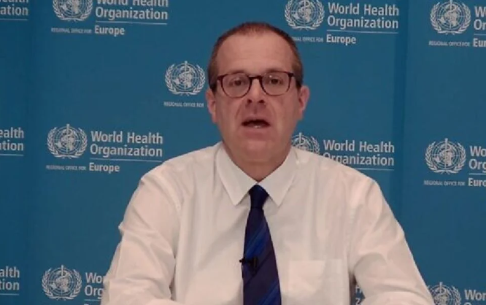

WHO bimbang 700,000 lagi kematian akibat COVID-19 di Eropah
Pengarah Serantau untuk WHO Eropah, Hans Kluge
COPENHAGEN: Eropah kekal 'dalam cengkaman kukuh' COVID-19' dan angka kematian di benua itu boleh mencecah 2.2 juta pada musim sejuk ini jika trend semasa berterusan, kata Pertubuhan Kesihatan Sedunia (WHO) hari ini.
Kira-kira 700,000 boleh mati dalam beberapa bulan akan datang, kata WHO, apabila kes menjalar di seluruh Eropah, mendorong beberapa negara untuk mengenakan semula sekatan yang ketat.
WHO menjangkakan 'tekanan tinggi atau melampau di unit rawatan rapi (ICU) di 49 daripada 53 negara antara sekarang dan 1 Mac 2022'.